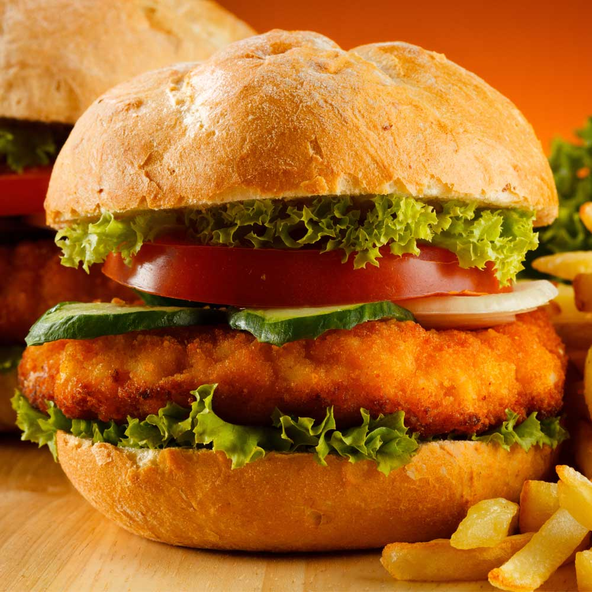

Sugestão de Lanches
Melhores receitas de lanches rápidos. Bruschetta guacamole. Bolinho salgado … Receitas de sanduíches rápidos 1. Sanduíche de presunto: a sugestão desta …
Lanchinhos com Rap10 . Pizza de cone: a sugestão desta receita é rechear a … Receitas rápidas para um café da manhã ou da tarde. Brownie de caneca